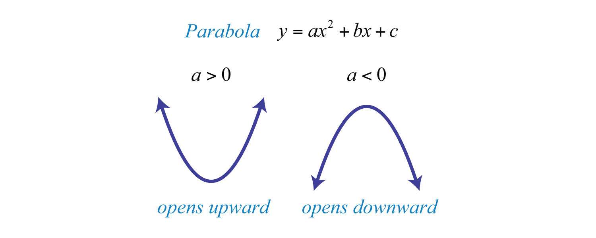

Quadratics
Quadratics are functions with x2 as the highest power. They follow the basic layout of F(x) = ax2 + bx + c
Example:
F(x) = 4x2 - 2x + 8
Factoring
To factor a quadratic, you need to look at the values of a, b, and c.
Example:
F(x) = 2x2 - 11x + 14
F(x) = (2x - 7)(x - 2)
The roots, or zeros, of a quadratic are determined by the factored version of the equation. To find the roots set F(x) = 0.
In this case, (2x - 7)(x - 2) = 0, so either (2x - 7) = 0 or (x - 2) = 0. The roots therefore are x = 7/2 and x = 2.
Sometimes the SAT will reuire you to manually factor a quadratic equation.
To do this, first, look at the factor pairs of c (14)
Factor Pairs: (1,14), (2,7)
If a = 1, then the two numbers in the factor pair should sum to b. However, since a = 2 in this case, one of the numbers in the factor pair will be multiplied by 2 before adding up to b.
Using this information and looking at the factor pairs, we can determine that the factored version of the equation is (2x - 7)(x - 2), since (2 * -2) - 7 = 14 = b.
Quadratic Formula
You can also use the quadratic formula to find the roots of a quadratic.
Using the quadratic formula, you will get 2 roots - one adding the square root phrase, and the other by subtracting the square root phrase.
Sometimes, the phrase within the square root will result in a negative number, which is impossible to find the square root of. In this case, there are no roots of the quadratic.
Graphing
The graph for a quadratic is always parabolic. The value of a determines which direction the parabola opens up.
Vertex
The vertex of the parabola the point of symmetry. The vertex is the minimum or maximum point of a parabola, depending on if it opens up or down, respectively.
The x value of the vertex can be evaluated through the expression x = -b / (2a). Using the x value, you can plug in for the y value of the vertex.
Vertex Form
Quadratic equations can also be represented in vertex form:
F(x) = a(x - h)2 + kIn vertex form of the quadratic, the vertex of the parabola is (h, k). Like before, a's value determines if the parabola opens up or down.
Converting to Vertex Form
To convert to vertex form, you need to "complete the square".
Example:
y = 4x2 + 24x - 6
First, move c to the other side of the equation and factor out a out of the right side.
Updated Equation:
y + 6 = 4(x2 + 6x)
Then, take the coeficcient before x, in this case 6, and divide it by 2. 6/2 = 3.
Change the parenthesis to be x - that number, squared. Then, square the number you end up with, multiply it by a, and add it to the left side of the equation.
32 = 9
9 * 4 = 36
Updated Equation:
y + 42 = 4(x + 3)2Finally, isolate y.
y = 4(x + 3)2 - 42